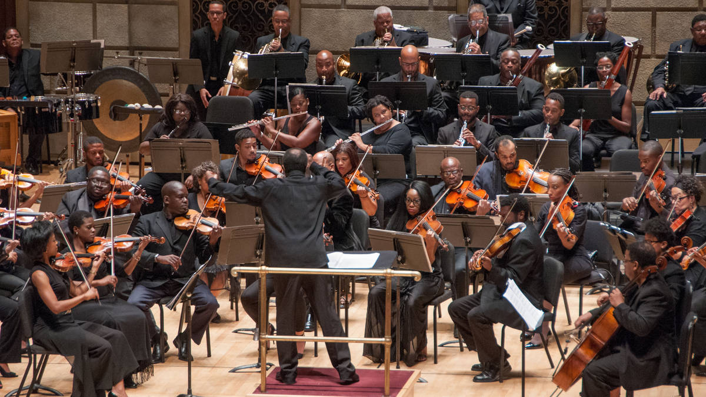

Orchestrally is a website designed to teach you everything you need to know about orchestras and the instruments within them. From the sections of an orchestra to famous musicians themselves, this website has all of the information in one place. If you have ever wanted to join an orchestra, or are just interested in learning about which instruments you may be interested in learning, you have come to the right website.
A full-scale symphony orchestra has around 100 musicians, split between 4 different sections: strings, woodwind, brass, and percussion. The average standard of the musicians is grade 8 (the highest grade in music), and professional orchestras can be extremely competetive to get into. However, there are many amateur and youth orchestras across the country which provide many more people with the chance of joining and experiencing what its like to be a musician in one.